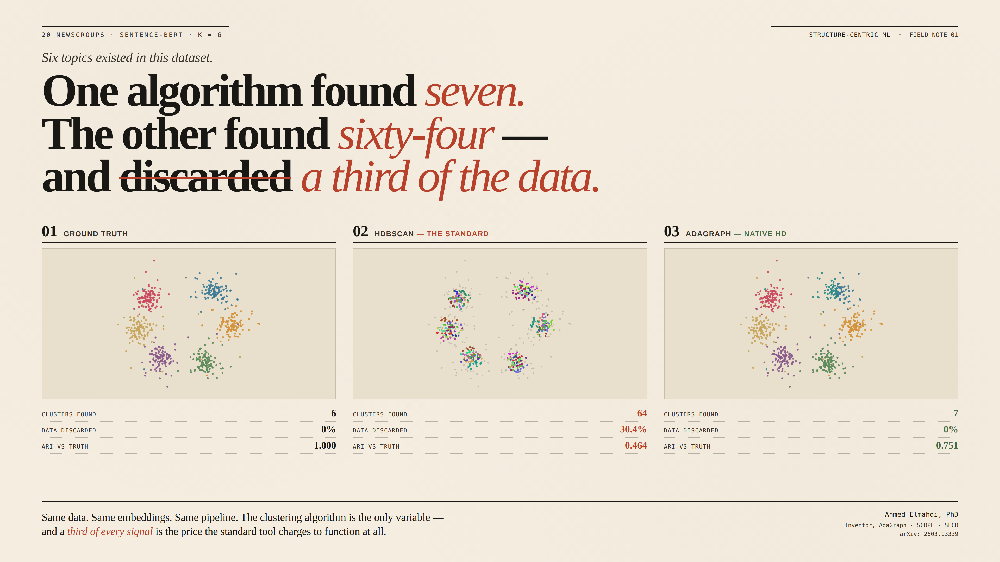

Structure-Centric Machine Learning is a new paradigm for unsupervised data analysis. It resolves three problems that DBSCAN (1996) and HDBSCAN (2013) never could: clustering in native high dimensions without reduction, retaining every data point instead of discarding noise, and transferring tuned parameters across dataset scales without re-tuning.

The same dataset. The same sentence-BERT embeddings. The same UMAP pipeline. The only variable was the clustering algorithm. HDBSCAN — the industry standard for a decade — produced 64 fragments and threw 30.4% of the data into a noise pile. AdaGraph, built on the structure-centric paradigm, produced 7 clean clusters with zero data discarded. ARI: 0.751 vs 0.464.
In high dimensions, every point is roughly equidistant from every other point. This is the textbook "curse of dimensionality," and it's the reason every modern clustering pipeline ends with the same preprocessing step: reduce the dimensions first, then cluster. That preprocessing is where the signal dies.
Structure-centric clustering changes what is being measured. Cluster identity is encoded not through point-to-point geometry but through the topological organization of points within their native feature space — using a kNN graph as the substrate. The result is a family of algorithms whose parameters are scale-invariant, whose validity metrics survive into the thousands of dimensions, and whose deployment workflow scales linearly from a 1,000-point sample to a 500,000-point dataset.
The complete two-dimensional pipeline. SCOPE diagnoses clustering quality across five components. AdaBox produces structure-centric clusters with scale-invariant parameters. SLCD transfers parameters from sample to full deployment. Strongest in any dimensionality where dimensionality reduction (UMAP, PCA, t-SNE) precedes clustering — including the BERTopic pipeline used by every social listening and trend detection platform in production today.
Examine the stack →The native high-dimensional pipeline. Graph-SCOPE evaluates clustering quality at any dimensionality without distance assumptions. AdaGraph clusters in 100–5,000+ dimensions without any reduction. The Density-Aware Sampler preserves density structure. SLCD deploys to half a million points. Strongest in domains where information lives in the native feature space: gene expression, materials properties, multi-modal sensor data.
Examine the stack →On lung adenocarcinoma (246 patients) and hepatocellular carcinoma (431 patients), AdaGraph found gene modules that WGCNA — the field's gold standard with 18,000+ citations — discarded entirely as background. 24 wins, 3 ties, 13 losses against four established competitors.
See the genomics study →Across 20-Newsgroups subsets (n=5,581 to 17,901) and AG-News (n=7,600), AdaHD achieves 0.5015 average ARI with 0% data loss versus 0.3516 for HDBSCAN with 23–36% noise rejection. SCOPE quality score: 0.76 vs 0.30.
See the text benchmark →On the SuperCon database (21,263 materials, 81 dimensions), AdaGraph identified 18 superconductor families aligned with the known physical classification — BCS, iron-based, cuprate — with no T꜀ supervision. K-Means+Silhouette returned k=2.
See the materials study →Three commercial verticals are open: social listening & trend detection (text), bioinformatics & drug discovery (genomics), materials informatics (high-dimensional scientific data). Licensing terms favor reference customers. Open a conversation →